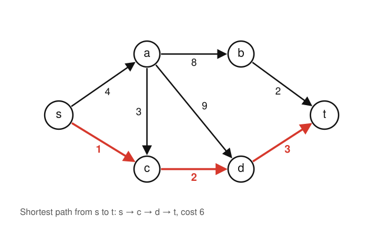
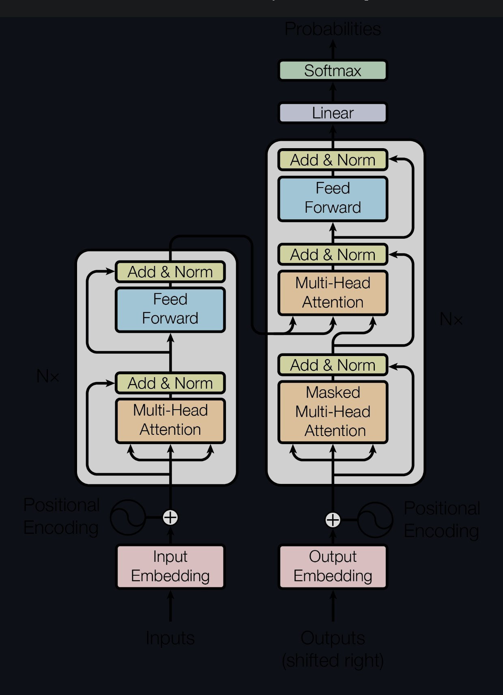
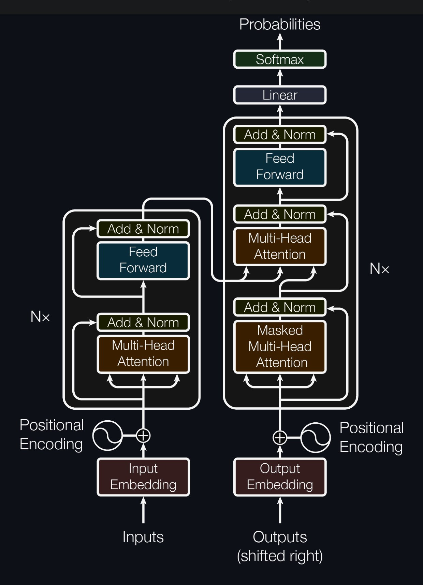
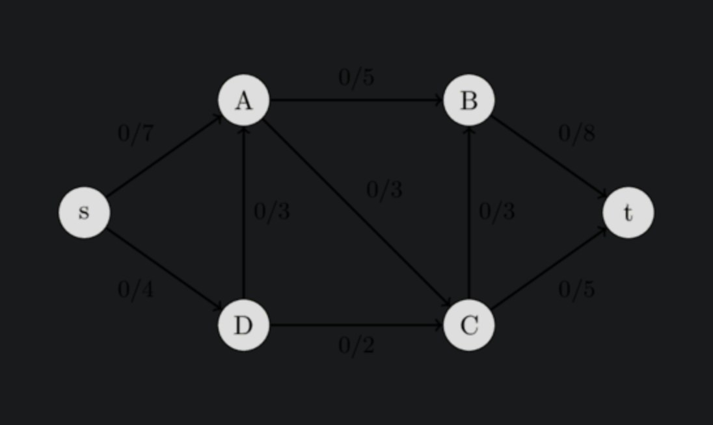
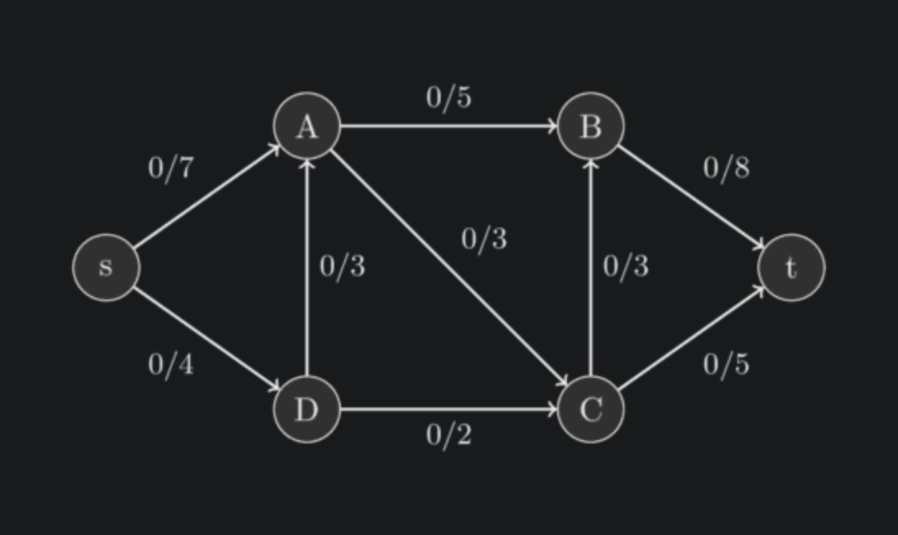
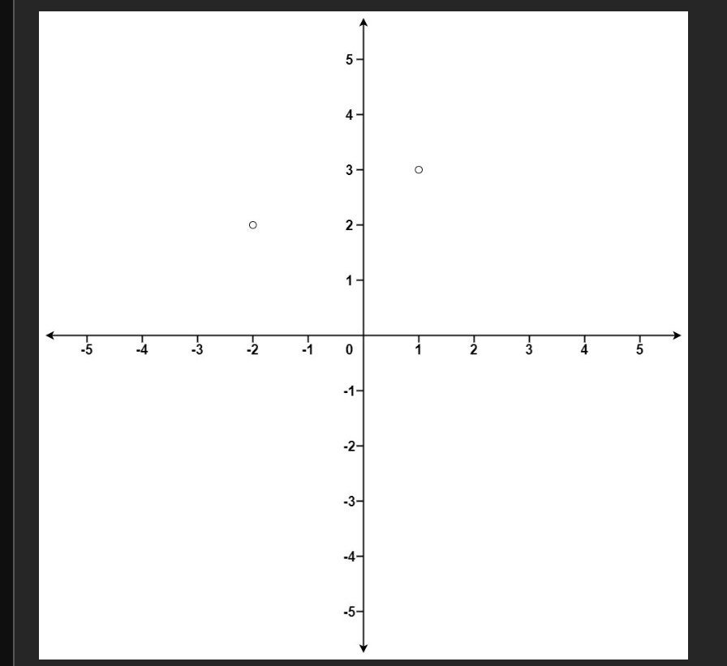
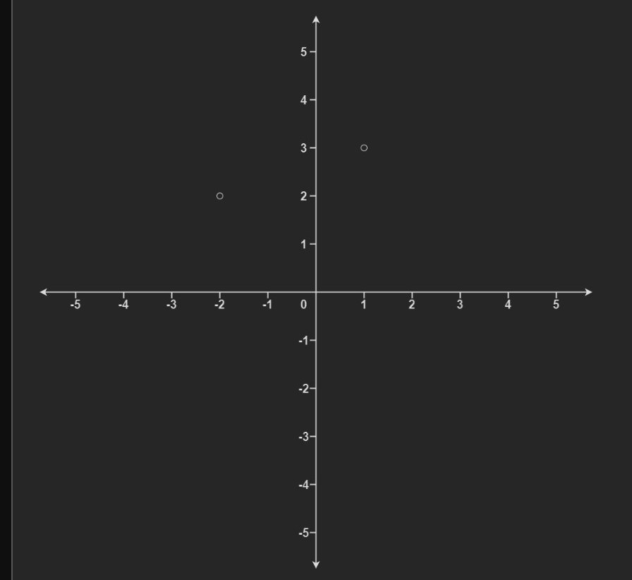
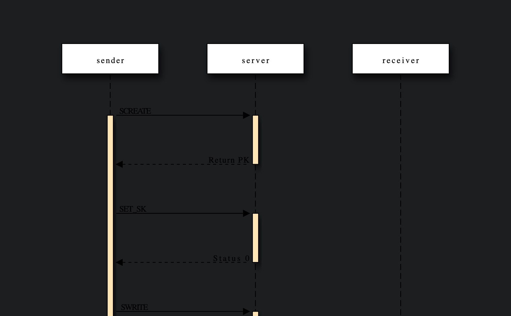
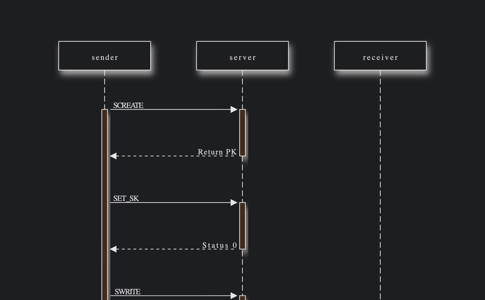

Dark mode for the images Dark Reader leaves white
Turn on Dark Reader and the page goes dark, but diagrams, charts and screenshots keep their white paper, and black logos disappear. Inkflip checks every image and fixes the ones drawn for white, so they match the page. Photos stay exactly as they are.
Free. Works in Chrome, Edge, Brave and Arc.
743. Cheapest route
Given a weighted directed graph, return the cost of the cheapest route from s to
t.
Example 1:

Input: s = 0, t = 5Output: 6
Drag the line. The right side is the same image with the CSS Inkflip applies: brightness inverted, colours kept, and the paper blended into the exact colour of the panel.
A white rectangle in a dark room
Dark Reader recolours pages, not pictures. It never looks inside an image, so every diagram drawn on white paper stays white. People have been asking for a fix for years.
bright white diagrams shining in my eyes
Hacker News, 2019Often it's completely invisible (black font on black background)
on Wikipedia formulas, Dark Reader issue #1273the png gets that dark grey color as it's background, making it unreadable
on chemistry diagrams, Dark Reader issue #11205, still openImages have a white background even with dark themes
The Rust book, issue #74, open since 2016alternating dark and bright screenfulls
r/webdev, 2022
Real pages, before and after
Captured with Dark Reader 4.9 in its default mode, then with Inkflip added. Drag any divider.








One decision per image
Inkflip samples each picture and measures its paper, ink, colour and how photographic it is. Then it picks one of four things to do.
- Flip
- Black-on-white diagrams, charts and screenshots. Brightness is inverted, colours keep their hue, and the white paper becomes the colour of the panel behind it.
- Brighten
- Black logos, formulas and line drawings on transparent backgrounds, which would otherwise vanish into the dark page.
- Dim
- Photos on white and colourful charts. Toned down a little, never inverted: a flipped photo looks like a negative.
- Leave
- Everything else. Ordinary photos, images that are already dark, and anything Dark Reader or the site has already inverted.
Safe to leave on
- It doesn’t flip photos. Field-tested on 73 real sites, including shops full of white products, and tuned on 393 hand-labelled images from them: no photo was flipped.
- No white flash. On dark pages a new image appears only once it has been checked, already dark. Revisits are instant.
- It gets out of the way. Light pages, sites you switch off, and images Dark Reader already fixed are left alone. Hold Option or Alt to peek at any original.
- Nothing leaves your browser. No account, no server, no analytics. Privacy policy
Install in a minute
The Chrome Web Store listing is on its way. Until then, install it directly:
- Download inkflip.zip and unzip it.
- Open
chrome://extensionsin a new tab and turn on Developer mode, top right. - Click Load unpacked and choose the unzipped folder. Keep Dark Reader in its default Dynamic mode.